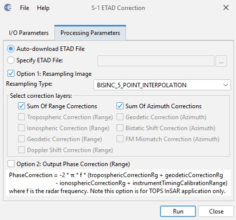

| ETAD Correction for Sentinel-1 Products |
The operator applies the ETAD correction to Sentinel-1 TOPS SLC, Stripmap and GRD products. The Extended Timing Annotation Dataset (ETAD) for Copernicus Sentinel-1 is a new auxiliary product developed by ESA (with DLR as contractor), providing users with corrections to improve the geometric accuracy of Sentinel-1 Products. For Sentinel-1 TOPS SLC images, the geometric accuracy can be improved to centimetric levels. The product contains analysis-ready layers for removing the atmospheric path delays, the solid Earth tidal deformation, and the Sentinel-1 system specific effects related to the IPF SAR processor. The operator computes for all pixels the range and azimuth offsets based on the user selected ETAD correction layers, then resamples the image based on the computed range and azimuth offsets.
For TOPS SLC product, the operator currently requires the users split the product into sub-swathes and applies the ETAD correction to the split product. It also requires the users to provide the ETAD product correspondingto the Sentinel-1 product. In future, the ETAD product will be downloaded automatically.

[1] S1-ETAD Project: Product definition Document, Doc. ID ETAD-DLR-PS-0002, Issue 2.4, Date 06.03.2023, Page 1 of 37.
[2] S1-ETAD: Product Format Specification Document, Doc. ID ETAD-DLR-PS-0014, Issue 1.8, Date 06.03.2023, Page 1 of 63.